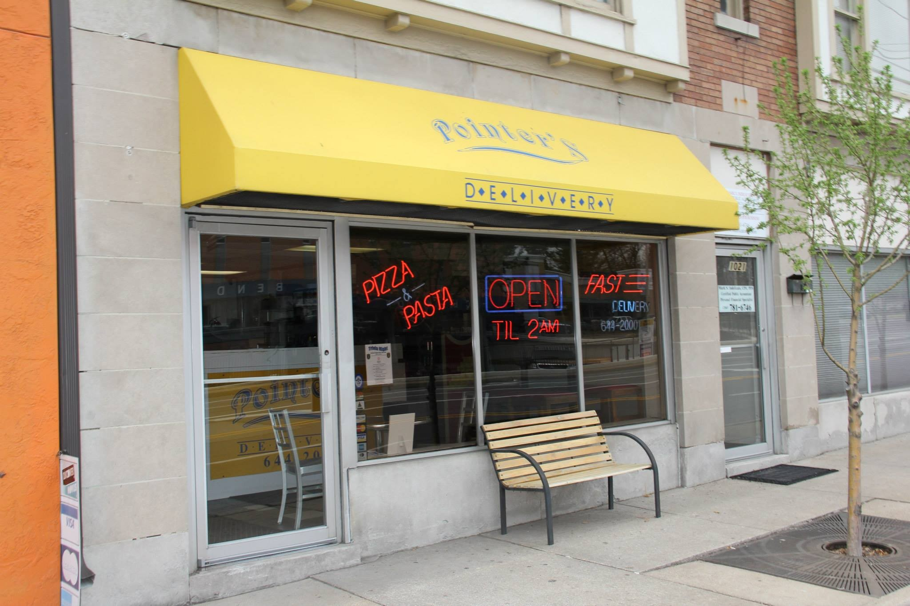
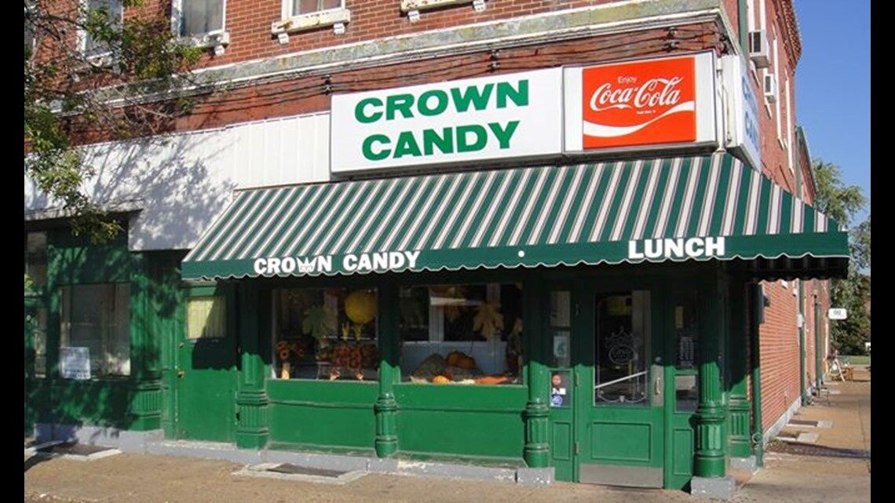
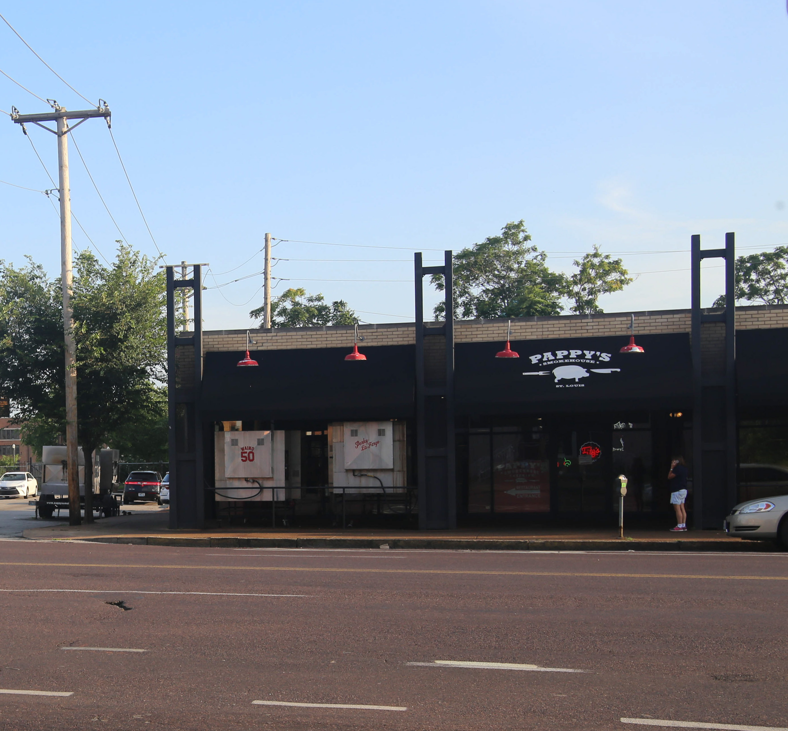
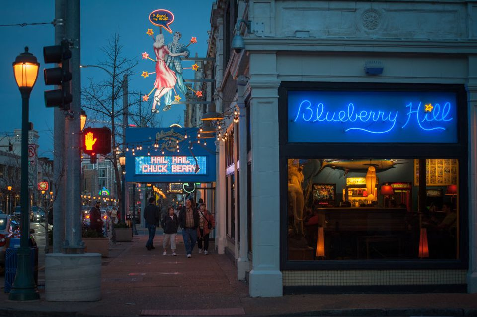
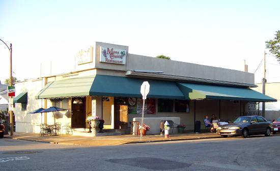

Visit their website here!
As featured on the 2007 edition of Food Heavens places to pig out on the Travel Channel. Pointers Pizza is a small mom and pop delivery spot outside downtown St. Louis. Home to a 28" two meat or four vegetable topped pizza that weighs over 10 pounds named 'The Pointersaurus' and one of the country's toughest eating challenges, a team of two can walk away $500 richer if they're able to eat the entire 28" pizza in under an hour.
Visit their website here!
Located in Old North St. Louis Crown Candy Kitchen is the oldest operating soda fountain in the metro area. With an interior filled with 1930s style decor, it is most known for it's milkshake challenge where should a person drink five 24oz malts or shakes within 30 minutes, they'll receive the malts for free and have their name inscribed upon a plaque in the store it is also known for it's BLT sandwich which uses 14 pieces of bacon.
Visit their website here!
On Olive Street in St. Louis you'll find the best ribs in America as voted by the Food Network in Pappy's Smokehouse. All the meat is fresh and cooked low and slow for true Memphis style barbecue.
Visit their website here!
Located in the Delmar Loop in University City, Blueberry Hill was most notable for being a performance spot for Chuck Berry every third Wednesday until 2014. It's cheeseburgers, dart rooms, and decor makes it a popular spot for local college students as well as tourists and right outside its doors is the St. Louis Walk of Fame where some of St. Louis's favorite sons like Chuck Berry, Redd Foxx, and Cedric the Entertainer are honored.
Visit their website here!
In the heart of St. Louis's Little Italy on The Hill, and more commonly known as 'Mama's on the Hill'. Originally calelled 'Oldani's' when it opened in 1939 before it closed down in 2005 then became known officially as 'Mama Campisi's' when it was reopened in 2006. this restaurant offers premier Italian cuisine and is famous for being the birthplace of one of St. Louis's most famous dishes, toasted ravioli.